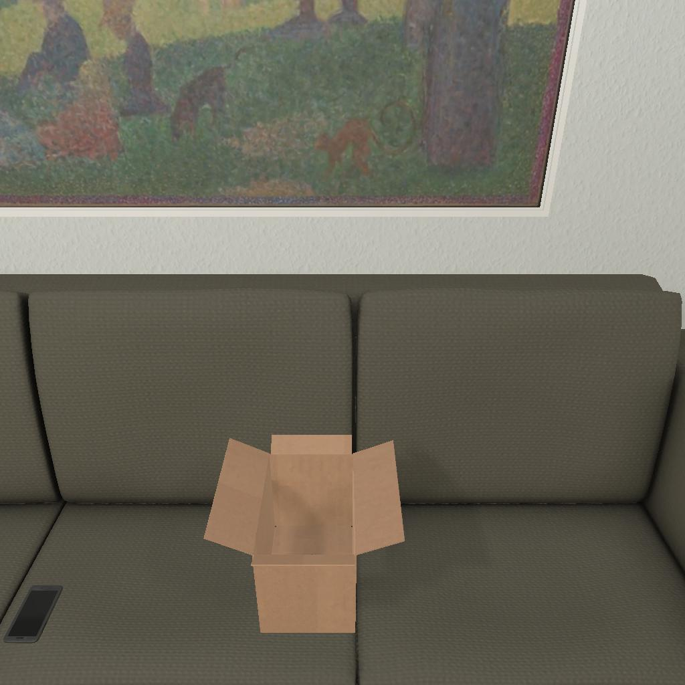

---------------------------------------------------------task: 5---------------------------------------------------------
--------------------------------------------------------------------------------------------------------------------------------------------------------------------
--------------------------------------------------------------------------------------------------------------------------------------------------------------------
Step:--------------------------------------------------------------------------0-------------------------------------------------------------------------------
----------------------------------------
VLM Prompt:
**Task**
Please perform as an embodied AI agent. Our final objective is to put some book on armchair. Below is the plan for completing the task, the current observation, alongside historical data and admissible actions for the next step. Please determine the best action for the next step!
**Plan**
Below is a detailed step-by-step plan to complete the task.
1. Find a book.
2. Pick up the book.
3. Find an armchair.
4. Place the picked-up book on the armchair.
**Current Observation**
Displayed is an image capturing the current position of the agent.
Objects in The Image: ['painting', 'sofa', 'cardboard box', 'smartphone']
**History Information**
Displayed are the previous observations with their corresponding actions.
No history.
**Admissible Actions**
(1): go to armchair 1
(2): go to sofa 1
(3): go to coffeetable 1
(4): go to drawer 1
(5): go to sidetable 1
(6): go to dresser 1
(7): go to drawer 2
(8): go to drawer 3
(9): go to drawer 4
(10): go to sidetable 2
(11): go to sidetable 3
**Analysis Guideline**
1. Analyze the history and current observation, and then determine our current step in the plan and our current place.
2. List all visible objects related to the task in the current observation, without summarizing any as "various items."
3. Analyze the objects in the current observation based on the history and the requirements for the current step, and then determine if we can complete the step with the current observation.
4. Analyze and decide on the most appropriate action to take.
5. Summarize the analysis using the following format: "Analysis: [The summarization of the analysis], The Most Appropriate Action: (i which is the integer.): [Selected action]"
**Notes**
1. We must complete each step of the plan in order and cannot skip steps when the previous ones are not finished.
2. For "Go to" actions listed as "go to xxx [n]", interpret this as there are n distinct actions available: "go to xxx 1", "go to xxx 2", ..., "go to xxx n". Select one specific action from these options instead of using "go to xxx [n]".
3. If receptacles such as drawers, cabinets, and so forth are closed in the current observation, we may try to open them.
4. Pay attention to synonyms and ensure clarity in the terms used.
5. We must determine and provide the single action which must be in the **Admissible Actions**.
6. If there is no history available, we are at the first step and the current place is "Unknown".
**Answer**
Please select the most suitable action by following the **Analysis Guideline**, keeping the above **Notes** in mind.
----------------------------------------
----------------------------------------
VLM Response:
Analysis: The current step in the plan is to find a book, which is the first step. Since there is no history information, we are beginning the task and our current location is unknown. In the current observation, we see a painting, a sofa, a cardboard box, and a smartphone. None of these objects are books, which means we cannot complete the current step with the objects visible in this observation. Therefore, we must move to a different location where we might find a book. Since none of the admissible actions specify a location that explicitly mentions books, we must choose a location where one might typically find a book, such as on or in a furniture piece that could potentially store books. A typical place to find books could be a drawer, dresser, or a side table. Since we don't know what is in the drawers or dresser, and since side tables sometimes have books on or in them, going to a side table seems like a reasonable next step.
The Most Appropriate Action: (5): go to sidetable 1
----------------------------------------
----------------------------------------
>>> Refine VLM Response and Get Pure Action: go to sidetable 1
----------------------------------------
-----------------------------------------------------------------
Running time: 11.325100421905518 seconds
Total Money: 0
-----------------------------------------------------------------
-----------------------------------------------------------------
Summarization Prompt:
**Context**
Analysis: Since there is no history information, we are at the first step in the plan, which is to find a statue. The current place is unknown. In the current observation, we see a floorlamp next to an armchair with a small table that has a small object on it, which could potentially be the statue we are looking for. Since the plan requires us to find a statue first and it appears there might be one on the table next to the armchair, we should investigate this object to determine if it is the statue we need.
The Most Appropriate Action: (1): go to armchair 1
**Summary**
1. Step Index in the Plan: 1
2. Objects: Floorlamp, Armchair, Small Table, Small Object (potential statue)
3. Action: go to armchair 1
**Context**
Analysis: The current step in the plan is to find a book, which is the first step. Since there is no history information, we are beginning the task and our current location is unknown. In the current observation, we see a painting, a sofa, a cardboard box, and a smartphone. None of these objects are books, which means we cannot complete the current step with the objects visible in this observation. Therefore, we must move to a different location where we might find a book. Since none of the admissible actions specify a location that explicitly mentions books, we must choose a location where one might typically find a book, such as on or in a furniture piece that could potentially store books. A typical place to find books could be a drawer, dresser, or a side table. Since we don't know what is in the drawers or dresser, and since side tables sometimes have books on or in them, going to a side table seems like a reasonable next step.
The Most Appropriate Action: (5): go to sidetable 1
Please summarize the context by following above examples when providing the summary, and ensure that only the summary is included, without any extra explanation.
**Summary**
-----------------------------------------------------------------
-----------------------------------------------------------------
Summarization Response:
2. Step Index in the Plan: 1
3. Objects: Painting, Sofa, Cardboard Box, Smartphone
4. Action: go to sidetable 1
-----------------------------------------------------------------
-----------------------------------------------------------------
Text Observation:You arrive at loc 4. On the sidetable 1, you see a houseplant 1, a wateringcan 1, and a pencil 1.
-----------------------------------------------------------------
UNSUCCEED